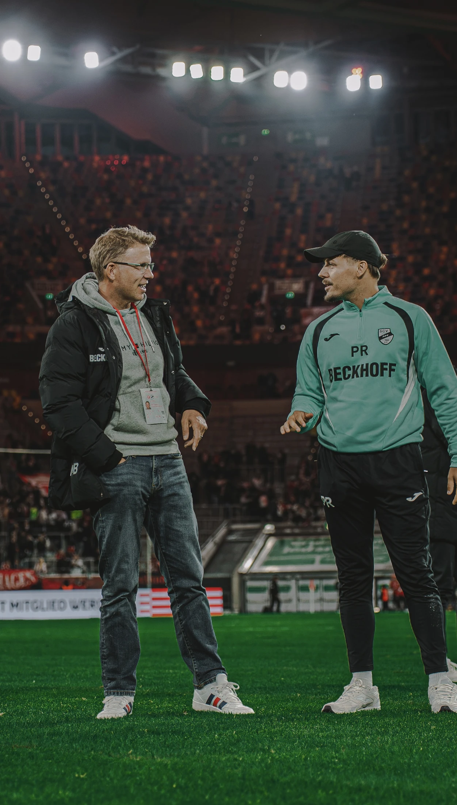
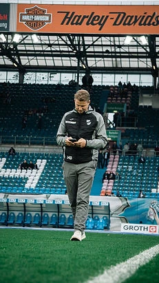
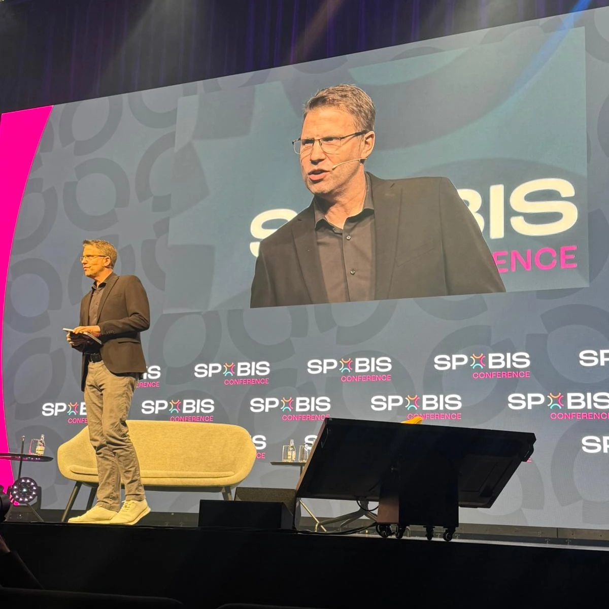
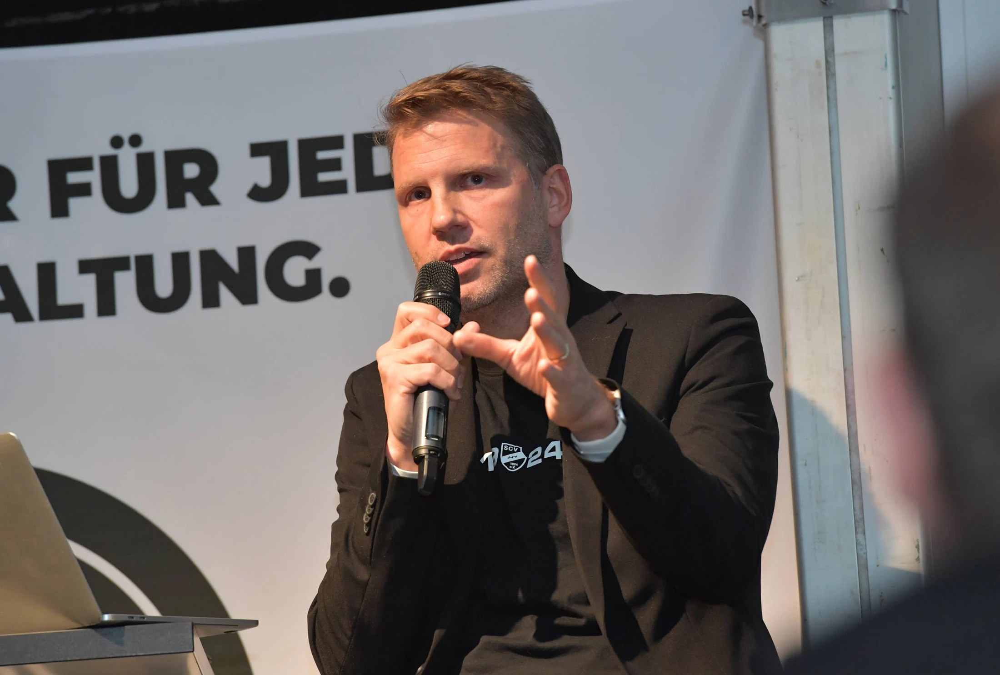

Wissen, wofür man steht.
Eine klare Spiel-DNA und ihre Prinzipien definieren. Eine gemeinsame Fußballidentität gibt dem Verein Orientierung für sportliche Entscheidungen – über Mannschaften und Entwicklungsphasen hinweg.
Matt Beadle · Sportliche Führung beim SC Verl
Ich bin Matt Beadle, Technischer Leiter beim SC Verl und Inhaber der UEFA-A-Lizenz. Meine Arbeit verbindet Vereins-DNA, Fußballphilosophie, Recruiting und Nachwuchsentwicklung. Das Spiel auf dem Platz ist Teil eines größeren Ganzen: Wie Menschen, Prinzipien und Entwicklungswege im Verein zusammenwirken.
Fußballexperte · 1:43
Taktische Analyse, datengestütztes Scouting, Teamkultur und Nachwuchsentwicklung. Meine Fußballperspektive in Gesprächen, Vorträgen und bei WDR 2 – mit englischen Untertiteln.
Lass uns über Fußball sprechen
Technischer Leiter · SC Verl
Als Technischer Leiter beim SC Verl gehöre ich zum Führungsteam, das die fußballerische Identität und die langfristige sportliche Strategie des Vereins gestaltet.
Meine Rolle verbindet Recruiting, Nachwuchsentwicklung und die Philosophie der ersten Mannschaft. Das Ziel ist ein stimmiges Gesamtkonzept: Entscheidungen über Spieler, Trainer und Entwicklung sollen zu dem Fußball passen, den der Verein spielen möchte.
Für mich beginnt diese Arbeit mit Klarheit. Was zeichnet uns aus? Welche Prinzipien leiten unsere Entscheidungen? Wie eröffnen wir talentierten Menschen einen sinnvollen Entwicklungsweg?
Diese Fragen reichen über das einzelne Spiel hinaus. Sie helfen einem Verein, seine Richtung beizubehalten und zugleich dazuzulernen und sich anzupassen.
Die Arbeit hinter dem Ergebnis
Identität, Recruiting, Entwicklung und Kultur müssen ineinandergreifen. Jede Entscheidung prägt das Umfeld, in dem Fußball entsteht.
Eine klare Spiel-DNA und ihre Prinzipien definieren. Eine gemeinsame Fußballidentität gibt dem Verein Orientierung für sportliche Entscheidungen – über Mannschaften und Entwicklungsphasen hinweg.
Recruiting mit der Spielphilosophie und der Ausrichtung des Vereins verbinden. Talent zählt – ebenso wie der Beitrag eines Spielers zum Team, seine Entwicklungsmöglichkeiten im Umfeld und seine Passung zu dem Fußball, den wir spielen möchten.
Nachwuchsentwicklung mit den Anforderungen des Erwachsenenfußballs verbinden. Als Head of Performance habe ich am Entwicklungsmodell für unsere Spieler gearbeitet. Dieser langfristige Blick prägt weiterhin mein Verständnis von Chancen und Fortschritt.
Fußballstrategie, Menschen und den täglichen Arbeitsalltag aufeinander abstimmen. Klare Erwartungen, gemeinsame Verantwortung und eine durchgängige Entwicklungsphilosophie verbinden die individuelle Arbeit mit den Zielen des Vereins.
Eine Perspektive aus dem Verein
Meine Arbeit beim SC Verl hat sich über Training, Performance und sportliche Führung entwickelt. Jede Rolle hat mir einen anderen Blick darauf eröffnet, wie Spieler, Mannschaften und die gesamte Organisation wachsen.
Ich besitze die UEFA-A-Lizenz und bringe darüber hinaus Erfahrung in Führung, Kommunikation und der Begleitung von Gruppenprozessen mit.
Juni 2025 – heute
Fußballidentität und langfristige sportliche Strategie: Recruiting, Nachwuchsentwicklung und die Philosophie der ersten Mannschaft miteinander verbinden.
Juli 2023 – Juni 2025
Entwicklungswege für Spieler und ein Ansatz auf Grundlage von Sportwissenschaft und evidenzbasierten Leistungsprinzipien.
Dezember 2020 – Juni 2023
Mitarbeit im Trainerteam und Begleitung der Spieler auf ihrem Weg zu den Anforderungen des Erwachsenenfußballs.

Fußballvorträge
Ich halte Vorträge über Vereins-DNA und Fußballphilosophie sowie über den Aufbau eines Nachwuchskonzepts – auf Grundlage meiner Arbeit beim SC Verl.

01 / Vereins-DNA & Philosophie
Wie definiert man eine Fußballidentität, die mehr bedeutet als ein Satz an der Wand? Ein Vortrag über das Zusammenspiel von Spielphilosophie, Führung, Recruiting und Kultur, damit die Prinzipien des Vereins seine Entscheidungen leiten.
Für Trainer, sportliche Führungskräfte und Vereinsteams, die eine klarere gemeinsame Richtung suchen.
Vereins-DNA-Vortrag anfragen
02 / Nachwuchsentwicklung
Wie entwickelt ein Verein ein schlüssiges Nachwuchskonzept? Ein Vortrag über das Zusammenspiel von altersgerechter Entwicklung, Trainingsprinzipien und sinnvollen Wegen in den Erwachsenenfußball – mit einem Blick über kurzfristige Ergebnisse hinaus.
Für Nachwuchsleiter, Trainer und Vereine, die ihre Arbeit mit jungen Spielern weiterentwickeln möchten.
Vortrag zur Nachwuchsentwicklung anfragenEin Gespräch vom Spielfeldrand
In der Halbzeitpause des Drittligaspiels SC Verl gegen Wiesbaden war ich bei Cedric Pick auf MagentaSport zu Gast. Wir sprachen über die Tore, die Leistungen der Mannschaft und strategische sowie infrastrukturelle Themen des Vereins.
Eine Gelegenheit, das Geschehen auf dem Platz mit dem längerfristigen Blick auf Ausrichtung und Entwicklung des Vereins zu verbinden.
Am Spielfeldrand beim SC Verl · Highlights mit Musik
Zuhören. Lesen. Mitreden.
Podcasts, Veröffentlichungen und Live-Diskussionen über das Spiel – und über die Menschen und Ideen, die es prägen.
Podcast / BRACE · Folge 006
Ein Gespräch mit Tim Santen und Misha Verollet-Dahncke über die Identität des SC Verl, Recruiting und Spielerentwicklung – und darüber, wie ein kleinerer Verein mit klaren Ideen mithalten kann.
BRACE-Folge auf YouTube ansehen ↗Podcast / WDR 2 Einfach Fußball
Zu Gast bei Sven Pistor und Conni Kleine: über den SC Verl, meinen Weg von England nach Ostwestfalen und die Ideen hinter der Entwicklung von Spielern und eines Fußballvereins.
Beim WDR anhörenArtikel / Fußballtraining
Ein Beitrag über die Nachwuchsentwicklung des SC Verl, einschließlich meines Vortrags beim Impulsforum. Im Mittelpunkt steht, Spielern Zeit, sinnvolle Chancen und einen Weg in den Erwachsenenfußball zu geben.
Artikel lesen & Vortrag ansehenLive-Panel / Arena auf Ewald
Auf dem Podium mit Dietmar Hirsch und Niklas Müller, moderiert von Cedric Pick. Von WM-Taktik und Leistungstrends bis zu den Herausforderungen unserer eigenen Vereine.
WM-Talk auf YouTube ansehen ↗Vereinsidentität, Führung, Spielerentwicklung oder dein nächstes Fußballevent.